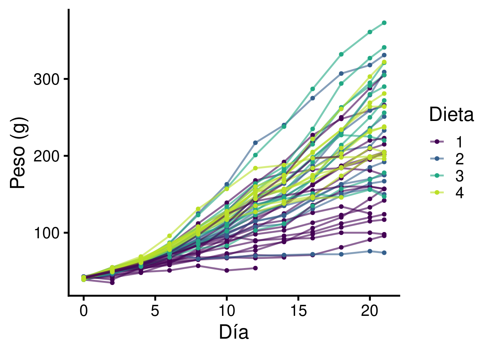
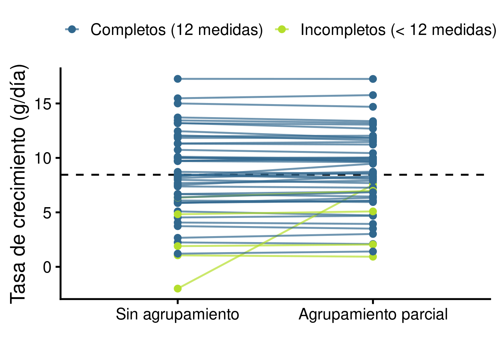
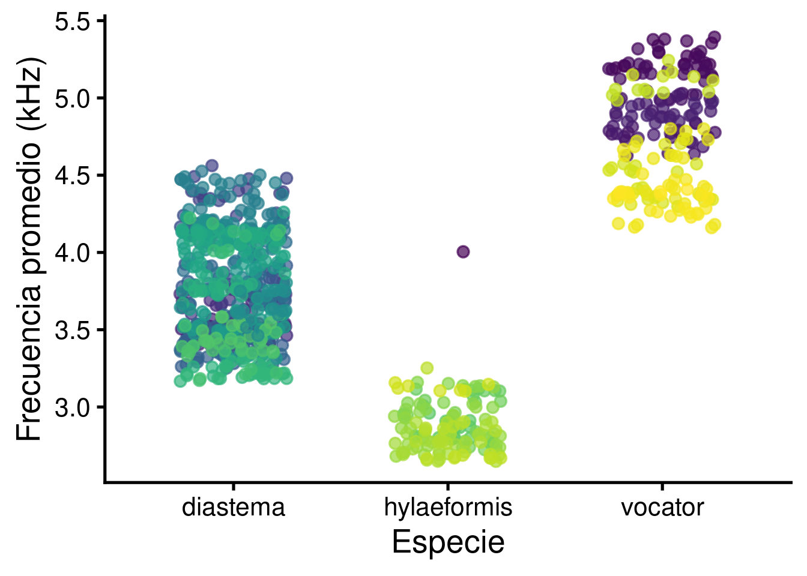
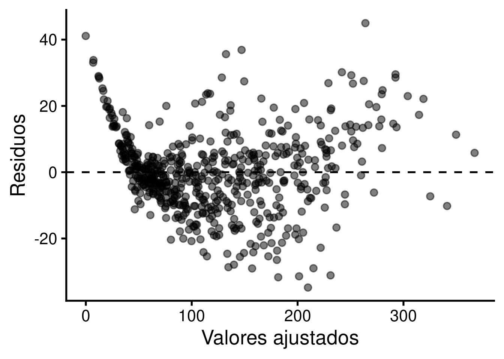
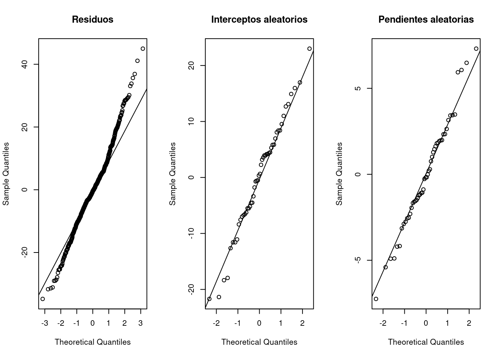

Código
# instalar/cargar paquetes
sketchy::load_packages(
c("ggplot2",
"viridis",
"lme4",
"lmerTest",
"emmeans")
)Cargando paquete requerido: emmeansEntender por qué los datos agrupados (no independientes) requieren modelos especiales
Comprender la diferencia entre agrupamiento completo, sin agrupamiento y agrupamiento parcial (partial pooling)
Ajustar e interpretar modelos lineales mixtos con interceptos y pendientes aleatorias usando lme4
Reconocer y evitar la pseudoreplicación en datos biológicos
Paquetes a utilizar en este manual:
# instalar/cargar paquetes
sketchy::load_packages(
c("ggplot2",
"viridis",
"lme4",
"lmerTest",
"emmeans")
)Cargando paquete requerido: emmeansEste manual continúa donde terminó la sección de modelos mixtos del manual de modelos de regresión. Allí vimos con datos simulados que ignorar la estructura de agrupamiento puede incluso invertir la dirección de un efecto (paradoja de Simpson). Aquí usaremos datos biológicos reales para entender con más detalle qué hace un modelo mixto y, sobre todo, cómo “comparte información” entre grupos mediante el agrupamiento parcial.
Los modelos lineales (lm()) asumen que cada observación es independiente de las demás. En biología esta suposición se viola constantemente:
Las observaciones dentro de un mismo grupo se parecen más entre sí que observaciones de grupos distintos. Si ignoramos esto, el modelo “cree” que tiene más información independiente de la que realmente tiene, lo que produce errores estándar demasiado pequeños y valores de p demasiado optimistas. A esto se le conoce como pseudoreplicación (Hurlbert 1984).
Los modelos mixtos resuelven el problema incluyendo dos tipos de efectos:
Usaremos el juego de datos ChickWeight que viene con R. Proviene de un experimento real (Crowder & Hand 1990) en el que se registró el peso (en gramos) de 50 pollitos desde el nacimiento hasta el día 21, cada dos días. Cada pollito recibió una de cuatro dietas. Traduciremos los nombres de las columnas al español:
pollos <- data.frame(
peso = ChickWeight$weight,
dia = ChickWeight$Time,
pollito = factor(as.character(ChickWeight$Chick)),
dieta = ChickWeight$Diet
)
head(pollos, 12)| peso | dia | pollito | dieta |
|---|---|---|---|
| 42 | 0 | 1 | 1 |
| 51 | 2 | 1 | 1 |
| 59 | 4 | 1 | 1 |
| 64 | 6 | 1 | 1 |
| 76 | 8 | 1 | 1 |
| 93 | 10 | 1 | 1 |
| 106 | 12 | 1 | 1 |
| 125 | 14 | 1 | 1 |
| 149 | 16 | 1 | 1 |
| 171 | 18 | 1 | 1 |
| 199 | 20 | 1 | 1 |
| 205 | 21 | 1 | 1 |
Cada pollito se midió varias veces, por lo que tenemos 578 observaciones pero solo 50 individuos. Además, no todos los pollitos tienen el mismo número de medidas (algunos murieron antes de terminar el experimento):
n_obs <- table(pollos$pollito)
sort(n_obs)
18 16 15 44 8 1 10 11 12 13 14 17 19 2 20 21 22 23 24 25 26 27 28 29 3 30
2 7 8 10 11 12 12 12 12 12 12 12 12 12 12 12 12 12 12 12 12 12 12 12 12 12
31 32 33 34 35 36 37 38 39 4 40 41 42 43 45 46 47 48 49 5 50 6 7 9
12 12 12 12 12 12 12 12 12 12 12 12 12 12 12 12 12 12 12 12 12 12 12 12 Este detalle (tamaños de muestra desiguales entre grupos) será clave para entender el agrupamiento parcial. Grafiquemos las curvas de crecimiento de todos los pollitos:
ggplot(pollos, aes(x = dia, y = peso, group = pollito, color = dieta)) +
geom_line(alpha = 0.6) +
geom_point(size = 1) +
scale_color_viridis_d(end = 0.9) +
labs(x = "Día", y = "Peso (g)", color = "Dieta")
Dos cosas saltan a la vista: (1) todos los pollitos crecen, pero (2) la tasa de crecimiento varía mucho entre individuos. Nuestro objetivo inicial será estimar la tasa de crecimiento (g/día) de cada pollito.
Hay tres estrategias para lidiar con datos agrupados. Las compararemos con un modelo sencillo de peso en función del día.
Ignoramos que las observaciones vienen de diferentes pollitos y ajustamos una sola recta para todos los datos:
m_completo <- lm(peso ~ dia, data = pollos)
coef(m_completo)(Intercept) dia
27.467 8.803 Este modelo asume que todos los pollitos son iguales: misma intercepto y misma tasa de crecimiento. Claramente eso no es cierto. Además trata las 578 observaciones como si fueran independientes.
En el otro extremo, ajustamos una regresión independiente para cada pollito. Cada individuo tiene su propio intercepto y su propia pendiente, y lo que aprendemos de un pollito no se usa para los demás:
donde \(j\) es el pollito al que pertenece la observación \(i\). La función lmList() de lme4 ajusta un lm() por grupo:
m_sin <- lmList(peso ~ dia | pollito, data = pollos)
coefs_sin <- coef(m_sin)
head(coefs_sin)| (Intercept) | dia | |
|---|---|---|
| 1 | 24.465 | 7.9879 |
| 10 | 38.695 | 4.0661 |
| 11 | 47.922 | 7.5110 |
| 12 | 21.940 | 8.4406 |
| 13 | 43.384 | 2.2396 |
| 14 | 20.525 | 11.9825 |
El problema de este abordaje es que los grupos con pocos datos producen estimados muy ruidosos. Por ejemplo, el pollito 18 solo tiene 2 medidas:
pollos[pollos$pollito == "18", ]| peso | dia | pollito | dieta | |
|---|---|---|---|---|
| 195 | 39 | 0 | 18 | 1 |
| 196 | 35 | 2 | 18 | 1 |
coefs_sin["18", ]| (Intercept) | dia | |
|---|---|---|
| 18 | 39 | -2 |
¡Su tasa de crecimiento estimada es negativa! Con solo dos puntos la recta pasa exactamente por ellos y no tenemos forma de distinguir señal de ruido. Sabemos (por los otros 49 pollitos) que los pollitos de esa edad normalmente ganan peso, pero este modelo ignora esa información.
El modelo mixto es un punto intermedio. Cada pollito tiene su propio intercepto y su propia pendiente, pero estas se asume que provienen de una distribución común:
En lme4 la sintaxis (dia | pollito) indica “intercepto y pendiente de dia variables entre pollitos”:
m_parcial <- lmer(peso ~ dia + (dia | pollito), data = pollos)
# coeficientes por pollito (efectos fijos + aleatorios)
coefs_parcial <- coef(m_parcial)$pollito
coefs_parcial["18", ]| (Intercept) | dia | |
|---|---|---|
| 18 | 31.581 | 7.5346 |
Ahora el pollito 18 tiene una tasa de crecimiento positiva y razonable. El modelo combinó la poca información de ese pollito con lo que aprendió de toda la población.
Juntemos los estimados de los tres modelos en un solo cuadro de datos:
# ordenar ambos cuadros igual
coefs_parcial <- coefs_parcial[rownames(coefs_sin), ]
estimados <- rbind(
data.frame(pollito = rownames(coefs_sin),
intercepto = unname(coef(m_completo)[1]),
pendiente = unname(coef(m_completo)[2]),
modelo = "Agrupamiento completo"),
data.frame(pollito = rownames(coefs_sin),
intercepto = coefs_sin[, 1],
pendiente = coefs_sin[, 2],
modelo = "Sin agrupamiento"),
data.frame(pollito = rownames(coefs_parcial),
intercepto = coefs_parcial[, 1],
pendiente = coefs_parcial[, 2],
modelo = "Agrupamiento parcial")
)
estimados$modelo <- factor(estimados$modelo, levels = c("Agrupamiento completo", "Sin agrupamiento", "Agrupamiento parcial"))
# añadir numero de observaciones por pollito
estimados$n <- as.vector(n_obs[estimados$pollito])
head(estimados)| pollito | intercepto | pendiente | modelo | n |
|---|---|---|---|---|
| 1 | 27.467 | 8.803 | Agrupamiento completo | 12 |
| 10 | 27.467 | 8.803 | Agrupamiento completo | 12 |
| 11 | 27.467 | 8.803 | Agrupamiento completo | 12 |
| 12 | 27.467 | 8.803 | Agrupamiento completo | 12 |
| 13 | 27.467 | 8.803 | Agrupamiento completo | 12 |
| 14 | 27.467 | 8.803 | Agrupamiento completo | 12 |
Y grafiquemos las rectas de los tres modelos para algunos pollitos, incluyendo los 4 que tienen menos datos (18, 16, 15 y 44):
pollitos_sel <- c("18", "16", "15", "44", "7", "21", "24", "35")
pollos_sel <- pollos[pollos$pollito %in% pollitos_sel, ]
pollos_sel$pollito <- factor(pollos_sel$pollito, levels = pollitos_sel)
estimados_sel <- estimados[estimados$pollito %in% pollitos_sel, ]
estimados_sel$pollito <- factor(estimados_sel$pollito, levels = pollitos_sel)
ggplot(pollos_sel, aes(x = dia, y = peso)) +
geom_point(size = 2) +
geom_abline(data = estimados_sel,
aes(intercept = intercepto, slope = pendiente, color = modelo, linetype = modelo),
linewidth = 1) +
scale_color_manual(values = col_mods) +
facet_wrap(~ pollito, nrow = 2, labeller = label_both) +
xlim(0, 21) +
labs(x = "Día", y = "Peso (g)", color = "", linetype = "") +
theme(legend.position = "top")
El fenómeno que acabamos de ver se llama encogimiento (shrinkage): los estimados de cada grupo se “encogen” hacia el promedio general. Veamos las tasas de crecimiento de los 50 pollitos con y sin agrupamiento:
pendientes <- estimados[estimados$modelo != "Agrupamiento completo", ]
pendientes$datos <- ifelse(pendientes$n < 12, "Incompletos (< 12 medidas)", "Completos (12 medidas)")
ggplot(pendientes, aes(x = modelo, y = pendiente, group = pollito, color = datos)) +
geom_hline(yintercept = fixef(m_parcial)[2], linetype = "dashed") +
geom_line(alpha = 0.7) +
geom_point(size = 2.5) +
scale_color_manual(values = viridis(10)[c(4, 9)]) +
labs(x = "", y = "Tasa de crecimiento (g/día)", color = "") +
theme(legend.position = "top")
La línea punteada es la pendiente promedio de la población (\(\beta_{1}\)). En general los estimados se mueven hacia ella, pero en estos datos el encogimiento es pequeño para casi todos los pollitos y enorme para el pollito 18, el único con apenas 2 medidas. Más adelante veremos por qué (cuadro “¿Cuánto se encoge cada estimado?”). También podemos verlo en las dos dimensiones (intercepto y pendiente) a la vez. Las flechas van del estimado sin agrupamiento al estimado con agrupamiento parcial:
flechas <- data.frame(
pollito = rownames(coefs_sin),
int_sin = coefs_sin[, 1],
pend_sin = coefs_sin[, 2],
int_par = coefs_parcial[, 1],
pend_par = coefs_parcial[, 2],
n = as.vector(n_obs[rownames(coefs_sin)])
)
ggplot(flechas) +
geom_segment(aes(x = int_sin, y = pend_sin, xend = int_par, yend = pend_par),
arrow = arrow(length = unit(0.15, "cm")), color = "gray50") +
geom_point(aes(x = int_sin, y = pend_sin, size = n), color = col_mods[2], alpha = 0.7) +
geom_point(aes(x = int_par, y = pend_par), color = col_mods[1], size = 2) +
annotate("point", x = fixef(m_parcial)[1], y = fixef(m_parcial)[2],
shape = 4, size = 6, stroke = 2) +
geom_text(data = flechas[flechas$n < 12, ],
aes(x = int_sin, y = pend_sin, label = pollito), nudge_x = 1.5, size = 5) +
labs(x = "Intercepto (g)", y = "Pendiente (g/día)",
size = "Número de\nmedidas")
Puntos azules: sin agrupamiento (tamaño según número de medidas); puntos morados: agrupamiento parcial; X: promedio poblacional (efectos fijos).
Note que las flechas no apuntan directamente hacia la X sino que se mueven a lo largo de la diagonal. Esto ocurre porque el modelo también estima la correlación entre interceptos y pendientes (aquí fuertemente negativa): al encoger la pendiente del pollito 18 el modelo también ajusta su intercepto de acuerdo con esa relación. Además, como el crecimiento no es perfectamente lineal, varios interceptos están por debajo del peso real al nacer (~40 g); el intercepto es una extrapolación de la recta, no el peso observado al día 0.
Para el caso más simple (un modelo solo con intercepto aleatorio), el estimado de agrupamiento parcial del grupo \(j\) es aproximadamente un promedio ponderado entre el promedio del grupo (\(\bar{y}_j\)) y el promedio general (\(\mu\)):
Por lo tanto, el encogimiento es mayor cuando:
Esto explica lo que vimos con los pollitos: las diferencias entre individuos son grandes y cada pollito tiene varias medidas con poco ruido, por lo que el modelo “confía” en los datos de cada pollito y casi no los encoge. Solo con 2 medidas (pollito 18) el promedio poblacional pesa más que los datos del individuo.
En los extremos: si \(\sigma_{grupo}^2 \rightarrow 0\) obtenemos agrupamiento completo, y si \(\sigma_{grupo}^2 \rightarrow \infty\) obtenemos el modelo sin agrupamiento. El modelo mixto estima de los datos cuánto agrupar.
¿Por qué es esto deseable? Porque los estimados extremos que vienen de pocos datos son, en promedio, exageraciones producto del azar. “Tomar prestada” información de los demás grupos produce estimados individuales que en promedio están más cerca de los valores reales. Esto es especialmente útil en biología, donde casi siempre tenemos tamaños de muestra desbalanceados (individuos que mueren, sitios con pocas capturas, especies raras).
Podemos comprobar que el agrupamiento parcial produce mejores estimados usando simulación, ya que solo en datos simulados conocemos los valores reales.
Simule 30 poblaciones de una especie de lagartija cuyo tamaño promedio (longitud hocico-cloaca) proviene de una distribución normal con media 60 mm y desviación estándar 5 mm. El número de individuos medidos por población debe variar entre 2 y 30 (use sample()), y la desviación estándar dentro de poblaciones debe ser 8 mm
Estime el promedio de cada población (a) sin agrupamiento (promedio simple de cada población) y (b) con agrupamiento parcial (coef() de lmer(lhc ~ 1 + (1 | poblacion)))
Calcule el error promedio (diferencia absoluta entre el promedio estimado y el promedio simulado) de cada abordaje. ¿Cuál es menor?
Grafique el error de cada abordaje en función del número de individuos por población
Veamos el resumen completo del modelo:
summary(m_parcial)Linear mixed model fit by REML. t-tests use Satterthwaite's method [
lmerModLmerTest]
Formula: peso ~ dia + (dia | pollito)
Data: pollos
REML criterion at convergence: 4827.5
Scaled residuals:
Min 1Q Median 3Q Max
-2.673 -0.556 -0.028 0.501 3.494
Random effects:
Groups Name Variance Std.Dev. Corr
pollito (Intercept) 140.5 11.85
dia 14.1 3.76 -0.95
Residual 163.5 12.79
Number of obs: 578, groups: pollito, 50
Fixed effects:
Estimate Std. Error df t value Pr(>|t|)
(Intercept) 29.178 1.957 49.130 14.9 <2e-16 ***
dia 8.453 0.541 48.662 15.6 <2e-16 ***
---
Signif. codes: 0 '***' 0.001 '**' 0.01 '*' 0.05 '.' 0.1 ' ' 1
Correlation of Fixed Effects:
(Intr)
dia -0.871El resumen tiene dos partes principales:
Efectos aleatorios (Random effects):
VarCorr(m_parcial) Groups Name Std.Dev. Corr
pollito (Intercept) 11.85
dia 3.76 -0.95
Residual 12.79 pollito (Intercept): la desviación estándar del peso inicial entre pollitos es 11.9 gpollito dia: la desviación estándar de la tasa de crecimiento entre pollitos es 3.76 g/día. Comparada con la tasa promedio (8.45 g/día) es una variación considerable entre individuosCorr: la correlación entre interceptos y pendientes (-0.951). Es negativa: los pollitos que tienen un intercepto más alto tienden a crecer más lento. Ojo: el intercepto corresponde al día 0, por lo que esta correlación depende de dónde está el 0 del predictor (ver ejercicio 2)Residual: la variación que queda dentro de cada pollito una vez que ajustamos su propia recta (12.8 g)Efectos fijos (Fixed effects):
summary(m_parcial)$coefficients Estimate Std. Error df t value Pr(>|t|)
(Intercept) 29.1780 1.95728 49.130 14.907 7.2991e-20
dia 8.4531 0.54083 48.662 15.630 1.3346e-20lmerTest; lme4 por sí solo no los calculaDesviaciones de cada grupo:
ranef() devuelve las desviaciones de cada pollito respecto a los efectos fijos (\(b_{0[j]}\), \(b_{1[j]}\))coef() devuelve los coeficientes de cada pollito (\(\beta_0 + b_{0[j]}\), \(\beta_1 + b_{1[j]}\))head(ranef(m_parcial)$pollito)| (Intercept) | dia | |
|---|---|---|
| 1 | 0.46724 | -0.76947 |
| 10 | 12.24670 | -4.51739 |
| 11 | 5.05628 | -0.12225 |
| 12 | -1.02086 | -0.38164 |
| 13 | 17.45121 | -6.36130 |
| 14 | -9.99753 | 3.58376 |
head(coef(m_parcial)$pollito)| (Intercept) | dia | |
|---|---|---|
| 1 | 29.645 | 7.6836 |
| 10 | 41.425 | 3.9357 |
| 11 | 34.234 | 8.3308 |
| 12 | 28.157 | 8.0714 |
| 13 | 46.629 | 2.0918 |
| 14 | 19.180 | 12.0368 |
lme4| Fórmula | Significado |
|---|---|
(1 | grupo) |
Intercepto aleatorio |
(x | grupo) |
Intercepto y pendiente de x aleatorios, correlacionados |
(x || grupo) |
Intercepto y pendiente aleatorios, sin correlación |
(0 + x | grupo) |
Solo pendiente aleatoria |
(1 | sitio/individuo) |
Individuos anidados en sitios (equivale a (1 | sitio) + (1 | sitio:individuo)) |
(1 | individuo) + (1 | año) |
Efectos aleatorios cruzados |
En un modelo con solo intercepto aleatorio, podemos calcular qué proporción de la varianza total se debe a diferencias entre grupos:
En ecología del comportamiento este valor se conoce como repetibilidad (Nakagawa & Schielzeth 2010) y se usa, por ejemplo, para saber qué tan consistente es una conducta o un rasgo dentro de individuos. Lo usaremos más adelante en el ejemplo de los cantos de ranas.
Hasta ahora solo describimos el crecimiento. La pregunta del experimento original era si la dieta afecta la tasa de crecimiento. Esto lo modelamos con una interacción entre dia y dieta (la pendiente de dia cambia según la dieta). Comparemos un modelo que ignora la agrupación con uno mixto:
# ignorando que hay medidas repetidas por pollito
m_lm_dieta <- lm(peso ~ dia * dieta, data = pollos)
# modelo mixto
m_mixto_dieta <- lmer(peso ~ dia * dieta + (dia | pollito), data = pollos)Comparemos los estimados y sus errores estándar:
comparacion <- data.frame(
estimado_lm = coef(m_lm_dieta),
EE_lm = summary(m_lm_dieta)$coefficients[, 2],
estimado_mixto = fixef(m_mixto_dieta),
EE_mixto = summary(m_mixto_dieta)$coefficients[, 2]
)
comparacion$razon_EE <- comparacion$EE_mixto / comparacion$EE_lm
round(comparacion, 3)| estimado_lm | EE_lm | estimado_mixto | EE_mixto | razon_EE | |
|---|---|---|---|---|---|
| (Intercept) | 30.931 | 4.247 | 33.661 | 2.919 | 0.687 |
| dia | 6.842 | 0.341 | 6.277 | 0.761 | 2.234 |
| dieta2 | -2.297 | 7.267 | -5.028 | 5.011 | 0.690 |
| dieta3 | -12.681 | 7.267 | -15.411 | 5.011 | 0.690 |
| dieta4 | -0.139 | 7.286 | -1.750 | 5.018 | 0.689 |
| dia:dieta2 | 1.767 | 0.572 | 2.332 | 1.304 | 2.282 |
| dia:dieta3 | 4.581 | 0.572 | 5.146 | 1.304 | 2.282 |
| dia:dieta4 | 2.873 | 0.578 | 3.255 | 1.305 | 2.258 |
Podemos comparar estos valores mas facilmente al graficarlos (la razón de errores estándar se muestra arriba de cada par de barras):
comparacion_long <- data.frame(
termino = rep(rownames(comparacion), 2),
modelo = rep(c("lm()", "lmer()"), each = nrow(comparacion)),
estimado = c(comparacion$estimado_lm, comparacion$estimado_mixto),
EE = c(comparacion$EE_lm, comparacion$EE_mixto),
razon_EE = rep(comparacion$razon_EE, 2)
)
dodge <- position_dodge(width = 0.5)
comparacion_long$panel <- ifelse(
grepl("dia", comparacion_long$termino),
"Describen crecimiento",
"Describen dieta"
)
comparacion_labels <- data.frame(
termino = rownames(comparacion),
panel = ifelse(grepl("dia", rownames(comparacion)),
"Describen crecimiento", "Describen dieta"),
y = pmax(
comparacion$estimado_lm + comparacion$EE_lm,
comparacion$estimado_mixto + comparacion$EE_mixto
) + 0.5,
razon_EE = sprintf("%.2f", comparacion$razon_EE)
)
ggplot(comparacion_long, aes(x = termino, y = estimado, color = modelo)) +
geom_point(position = dodge, size = 3) +
geom_errorbar(
aes(ymin = estimado - EE, ymax = estimado + EE),
position = dodge,
width = 0.2
) +
geom_text(
data = comparacion_labels,
aes(x = termino, y = y, label = razon_EE),
inherit.aes = FALSE,
color = "black",
size = 3
) +
facet_wrap(~panel, scales = "free") +
scale_color_manual(
name = "Modelo",
values = c("lm()" = col_mods[1], "lmer()" = col_mods[2])
) +
labs(x = "Término del modelo", y = "Estimado") +
theme_classic() +
theme(legend.position = "top")
Los estimados son similares, pero los errores estándar cambian bastante:
Para los términos que describen la tasa de crecimiento (dia y las interacciones dia:dieta, que son los que responden nuestra pregunta) los errores estándar del modelo mixto son más del doble que los del lm(). La dieta se asignó a pollitos, no a medidas: la unidad experimental es el pollito (50), no la medición (578). El lm() trata cada medición como independiente y es demasiado confiado (pseudoreplicación)
Para el intercepto y los efectos principales de la dieta (peso al día 0) los errores estándar del modelo mixto son menores. El lm() mete en un solo término de error toda la variación, incluyendo las grandes diferencias en crecimiento entre pollitos que se acumulan con el tiempo. El modelo mixto separa esas fuentes de variación y estima con más precisión lo que ocurre al inicio
Es decir, el modelo mixto no es simplemente “más conservador”: asigna la incertidumbre al nivel que corresponde.
Grafiquemos las predicciones del modelo para cada dieta (efectos fijos únicamente, con re.form = NA):
nuevos_datos <- expand.grid(dia = 0:21, dieta = levels(pollos$dieta))
nuevos_datos$peso <- predict(m_mixto_dieta, newdata = nuevos_datos, re.form = NA)
ggplot(pollos, aes(x = dia, y = peso, color = dieta)) +
geom_line(aes(group = pollito), alpha = 0.25) +
geom_line(data = nuevos_datos, linewidth = 2) +
scale_color_viridis_d(end = 0.9) +
facet_wrap(~ dieta, labeller = label_both) +
labs(x = "Día", y = "Peso (g)") +
theme(legend.position = "none")
Podemos comparar las tasas de crecimiento entre dietas con el paquete emmeans:
emtrends(m_mixto_dieta, pairwise ~ dieta, var = "dia", lmer.df = "satterthwaite")$emtrends
dieta dia.trend SE df lower.CL upper.CL
1 6.28 0.761 47.0 4.75 7.81
2 8.61 1.059 45.1 6.48 10.74
3 11.42 1.059 45.1 9.29 13.56
4 9.53 1.060 45.3 7.40 11.67
Degrees-of-freedom method: satterthwaite
Confidence level used: 0.95
$contrasts
contrast estimate SE df t.ratio p.value
1 - 2 -2.332 1.30 45.8 -1.788 0.2922
1 - 3 -5.146 1.30 45.8 -3.945 0.0015
1 - 4 -3.255 1.31 45.9 -2.494 0.0743
2 - 3 -2.814 1.50 45.1 -1.879 0.2516
2 - 4 -0.923 1.50 45.2 -0.616 0.9265
3 - 4 1.891 1.50 45.2 1.262 0.5915
Degrees-of-freedom method: satterthwaite
P value adjustment: tukey method for comparing a family of 4 estimates Todas las dietas tienen tasas de crecimiento promedio mayores que la dieta 1, pero después de corregir por comparaciones múltiples solo la diferencia entre las dietas 1 y 3 es significativa. Con el lm() (que ignora la pseudoreplicación) habríamos concluido que varias de estas diferencias son significativas:
emtrends(m_lm_dieta, pairwise ~ dieta, var = "dia")$emtrends
dieta dia.trend SE df lower.CL upper.CL
1 6.84 0.341 570 6.17 7.51
2 8.61 0.459 570 7.71 9.51
3 11.42 0.459 570 10.52 12.32
4 9.71 0.467 570 8.80 10.63
Confidence level used: 0.95
$contrasts
contrast estimate SE df t.ratio p.value
1 - 2 -1.77 0.572 570 -3.091 0.0112
1 - 3 -4.58 0.572 570 -8.014 <.0001
1 - 4 -2.87 0.578 570 -4.969 <.0001
2 - 3 -2.81 0.649 570 -4.335 0.0001
2 - 4 -1.11 0.655 570 -1.688 0.3310
3 - 4 1.71 0.655 570 2.609 0.0459
P value adjustment: tukey method for comparing a family of 4 estimates Un caso muy común en bioacústica y comportamiento es grabar varios cantos por individuo. Usaremos datos de estructura acústica de cantos de tres especies de ranas del género Diasporus (D. diastema, D. hylaeformis y D. vocator). Cada grabación (sound.files) corresponde a un individuo, y de cada una se midieron varios cantos (selec):
cantos <- read.csv("https://raw.githubusercontent.com/maRce10/r_avanzado_2026/refs/heads/master/images/diastema.csv")
cantos$especie <- factor(cantos$species)
cantos$individuo <- factor(cantos$sound.files)
# numero de cantos e individuos por especie
data.frame(cantos = as.vector(table(cantos$especie)),
individuos = tapply(cantos$individuo, cantos$especie, function(x) length(unique(x))))| cantos | individuos | |
|---|---|---|
| diastema | 563 | 107 |
| hylaeformis | 135 | 31 |
| vocator | 203 | 30 |
Tenemos 901 cantos pero solo 168 individuos. Comparemos la frecuencia promedio (meanfreq, en kHz) entre especies:
ggplot(cantos, aes(x = especie, y = meanfreq)) +
geom_jitter(aes(color = individuo), width = 0.25, alpha = 0.7, show.legend = FALSE) +
scale_color_viridis_d() +
labs(x = "Especie", y = "Frecuencia promedio (kHz)")
Los colores muestran que los cantos de un mismo individuo forman “grumos”: son casi idénticos entre sí. Ajustemos un modelo ignorando al individuo y otro con intercepto aleatorio por individuo:
m_lm_cantos <- lm(meanfreq ~ especie, data = cantos)
m_mixto_cantos <- lmer(meanfreq ~ especie + (1 | individuo), data = cantos)
data.frame(
EE_lm = summary(m_lm_cantos)$coefficients[, 2],
EE_mixto = summary(m_mixto_cantos)$coefficients[, 2]
)| EE_lm | EE_mixto | |
|---|---|---|
| (Intercept) | 0.01375 | 0.03213 |
| especiehylaeformis | 0.03126 | 0.06783 |
| especievocator | 0.02671 | 0.06856 |
Los errores estándar del modelo mixto son más del doble. Calculemos la repetibilidad (ICC):
vc <- as.data.frame(VarCorr(m_mixto_cantos))
icc <- vc$vcov[1] / sum(vc$vcov)
icc[1] 0.97657El 97.7% de la variación en frecuencia se debe a diferencias entre individuos. Es decir, grabar un canto más del mismo individuo casi no aporta información nueva. En la práctica, el tamaño de muestra efectivo está mucho más cerca del número de individuos (168) que del número de cantos (901).
Una forma de comprobarlo es promediar los cantos de cada individuo y ajustar un lm() a esos promedios. Los errores estándar son muy similares a los del modelo mixto:
promedios <- aggregate(meanfreq ~ individuo + especie, data = cantos, FUN = mean)
m_lm_promedios <- lm(meanfreq ~ especie, data = promedios)
summary(m_lm_promedios)$coefficients[, 2] (Intercept) especiehylaeformis especievocator
0.032147 0.067826 0.068697 La ventaja del modelo mixto sobre promediar es que usa toda la información (p. ej. pondera adecuadamente a los individuos con más o menos cantos), estima la variación dentro y entre individuos y permite incluir predictores medidos a nivel de canto.
Calcule la repetibilidad (ICC) de la duración de los cantos (duration) de las ranas. ¿Es la duración más o menos repetible que la frecuencia promedio?
En el modelo de los pollitos, la correlación entre interceptos y pendientes depende de dónde está el 0 de dia. Cree una variable dia_c <- pollos$dia - 10 y vuelva a ajustar m_parcial con ella. ¿Cambia la correlación? ¿Cambia la pendiente promedio?
Por defecto lmer() ajusta los modelos por máxima verosimilitud restringida (REML), que produce estimados menos sesgados de las varianzas. Sin embargo, para comparar modelos con diferentes efectos fijos se debe usar máxima verosimilitud (ML). La función anova() re-ajusta automáticamente los modelos con ML cuando se usa con modelos de lmer():
m_mixto_sin_dieta <- lmer(peso ~ dia + (dia | pollito), data = pollos)
anova(m_mixto_sin_dieta, m_mixto_dieta)refitting model(s) with ML (instead of REML)| npar | AIC | BIC | logLik | -2*log(L) | Chisq | Df | Pr(>Chisq) | |
|---|---|---|---|---|---|---|---|---|
| m_mixto_sin_dieta | 6 | 4841.8 | 4868.0 | -2414.9 | 4829.8 | NA | NA | NA |
| m_mixto_dieta | 12 | 4824.2 | 4876.5 | -2400.1 | 4800.2 | 29.613 | 6 | 5e-05 |
El modelo que incluye la dieta se ajusta significativamente mejor a los datos.
La función ranova() de lmerTest evalúa cada efecto aleatorio comparando el modelo con uno que no lo incluye (prueba de razón de verosimilitudes):
ranova(m_mixto_dieta)| npar | logLik | AIC | LRT | Df | Pr(>Chisq) | |
|---|---|---|---|---|---|---|
| 12 | -2390.8 | 4805.5 | NA | NA | NA | |
| dia in (dia | pollito) | 10 | -2733.5 | 5486.9 | 685.38 | 2 | 0 |
Aquí eliminar la pendiente aleatoria (dejando solo el intercepto aleatorio) empeora mucho el modelo, lo que confirma que la tasa de crecimiento varía entre pollitos. Note que estas pruebas son conservadoras porque las varianzas no pueden ser negativas (el valor nulo está en el borde del espacio de parámetros). En general, los efectos aleatorios que reflejan el diseño del estudio (p. ej. medidas repetidas del mismo individuo) deben incluirse aunque no sean “significativos”.
confint(m_parcial, method = "profile")Computing profile confidence intervals ... 2.5 % 97.5 %
.sig01 8.8702 15.31039
.sig02 3.0739 4.61622
.sig03 -1.0000 -0.86293
.sigma 12.0182 13.64087
(Intercept) 25.3113 33.05536
dia 7.3817 9.52153.sig01 y .sig02 son las desviaciones estándar del intercepto y la pendiente aleatorios, .sig03 es su correlación y .sigma es la desviación estándar residual.
Los modelos mixtos tienen los mismos supuestos que los modelos lineales (linealidad, homocedasticidad, normalidad de residuos), más uno adicional: los efectos aleatorios deben tener una distribución aproximadamente normal.
diag_df <- data.frame(ajustado = fitted(m_mixto_dieta), residuo = resid(m_mixto_dieta))
ggplot(diag_df, aes(x = ajustado, y = residuo)) +
geom_point(alpha = 0.5) +
geom_hline(yintercept = 0, linetype = "dashed") +
labs(x = "Valores ajustados", y = "Residuos")
par(mfrow = c(1, 3))
qqnorm(resid(m_mixto_dieta), main = "Residuos")
qqline(resid(m_mixto_dieta))
qqnorm(ranef(m_mixto_dieta)$pollito[, 1], main = "Interceptos aleatorios")
qqline(ranef(m_mixto_dieta)$pollito[, 1])
qqnorm(ranef(m_mixto_dieta)$pollito[, 2], main = "Pendientes aleatorias")
qqline(ranef(m_mixto_dieta)$pollito[, 2])
Los residuos muestran forma de “embudo”: la variación aumenta con el peso. Esto es común en datos de crecimiento (el crecimiento es multiplicativo, no aditivo). Una solución usual es modelar el logaritmo del peso (ver ejercicio 3). El paquete performance ofrece una revisión gráfica completa con performance::check_model().
No hay una regla única, pero estas guías ayudan:
| Usar como efecto aleatorio cuando… | Usar como efecto fijo cuando… |
|---|---|
| Los niveles son una muestra de una población más grande (individuos, sitios, nidos, años) | Los niveles son todos los que nos interesan (tratamientos, sexo, especie en un estudio de 3 especies) |
| Queremos generalizar más allá de los niveles muestreados | Queremos comparar esos niveles específicos |
| Hay al menos 5-6 niveles (con menos, la varianza se estima muy mal) | Hay pocos niveles |
| Algunos grupos tienen pocos datos (el agrupamiento parcial ayuda) |
Un error común es incluir una variable como efecto aleatorio y como efecto fijo a la vez, o usar como aleatorio un factor con 2 o 3 niveles. En este último caso el modelo suele estimar una varianza de 0 (boundary (singular) fit), lo que es una señal de que el modelo es demasiado complejo para los datos.
Ajuste el modelo m_mixto_dieta usando log(peso) como respuesta. Interprete la pendiente de dia (pista: exp(pendiente) - 1 es la proporción de crecimiento diario). Revise los residuos: ¿mejoró la homocedasticidad?
El juego de datos sleepstudy (paquete lme4) contiene el tiempo de reacción (Reaction, ms) de 18 personas durante 10 días de privación de sueño (Days). Ajuste los modelos de agrupamiento completo, sin agrupamiento y parcial, y haga el gráfico de encogimiento (flechas) de intercepto y pendiente. ¿Qué personas muestran más encogimiento? ¿Por qué el encogimiento es menor que en los pollitos?
El juego de datos CO2 contiene la absorción de CO2 (uptake) de 12 plantas del pasto Echinochloa crus-galli de dos orígenes (Type: Quebec y Mississippi), sometidas a dos tratamientos (Treatment: enfriadas o no), medidas a 7 concentraciones de CO2 (conc). Ajuste un modelo mixto para evaluar si el efecto del enfriamiento depende del origen de la planta (uptake ~ log(conc) + Type * Treatment). ¿Cuál es el efecto aleatorio adecuado? ¿Cuál es la unidad experimental?
Bates, D., Mächler, M., Bolker, B., & Walker, S. (2015). Fitting linear mixed-effects models using lme4. Journal of Statistical Software, 67(1), 1-48.
Crowder, M. J., & Hand, D. J. (1990). Analysis of repeated measures. Chapman and Hall.
Gelman, A., & Hill, J. (2007). Data analysis using regression and multilevel/hierarchical models. Cambridge University Press.
Harrison, X. A., Donaldson, L., Correa-Cano, M. E., Evans, J., Fisher, D. N., Goodwin, C. E., & Inger, R. (2018). A brief introduction to mixed effects modelling and multi-model inference in ecology. PeerJ, 6, e4794.
Hurlbert, S. H. (1984). Pseudoreplication and the design of ecological field experiments. Ecological Monographs, 54(2), 187-211.
Mahr, T. (2017). Plotting partial pooling in mixed-effects models.
Nakagawa, S., & Schielzeth, H. (2010). Repeatability for Gaussian and non-Gaussian data: a practical guide for biologists. Biological Reviews, 85(4), 935-956.
Silk, M. J., Harrison, X. A., & Hodgson, D. J. (2020). Perils and pitfalls of mixed-effects regression models in biology. PeerJ, 8, e9522.
─ Session info ───────────────────────────────────────────────────────────────
setting value
version R version 4.6.1 (2026-06-24)
os Ubuntu 22.04.2 LTS
system x86_64, linux-gnu
ui X11
language es_ES:en
collate en_US.UTF-8
ctype en_US.UTF-8
tz America/Costa_Rica
date 2026-11-01
pandoc 3.6.3 @ /usr/lib/rstudio/resources/app/bin/quarto/bin/tools/x86_64/ (via rmarkdown)
quarto 1.4.549 @ /usr/local/bin/quarto
─ Packages ───────────────────────────────────────────────────────────────────
package * version date (UTC) lib source
boot 1.3-28 2021-05-03 [4] CRAN (R 4.1.1)
cachem 1.1.0 2024-05-16 [1] CRAN (R 4.6.1)
cli 3.6.6 2026-04-09 [1] CRAN (R 4.6.1)
coda 0.19-4 2020-09-30 [3] CRAN (R 4.0.2)
codetools 0.2-18 2020-11-04 [4] CRAN (R 4.0.3)
crayon 1.5.3 2024-06-20 [1] CRAN (R 4.6.1)
devtools 2.5.2 2026-04-30 [1] CRAN (R 4.6.1)
digest 0.6.39 2025-11-19 [1] CRAN (R 4.6.1)
dplyr 1.2.1 2026-04-03 [1] CRAN (R 4.6.1)
ellipsis 0.3.3 2026-04-04 [1] CRAN (R 4.6.1)
emmeans * 1.7.2 2022-01-04 [3] CRAN (R 4.1.2)
estimability 1.3 2018-02-11 [3] CRAN (R 4.0.1)
evaluate 1.0.5 2025-08-27 [1] CRAN (R 4.6.1)
farver 2.1.2 2024-05-13 [1] CRAN (R 4.6.1)
fastmap 1.2.0 2024-05-15 [1] CRAN (R 4.6.1)
fs 2.1.0 2026-04-18 [1] CRAN (R 4.6.1)
generics 0.1.4 2025-05-09 [1] CRAN (R 4.6.1)
ggplot2 * 4.0.3 2026-04-22 [1] CRAN (R 4.6.1)
glue 1.8.1 2026-04-17 [1] CRAN (R 4.6.1)
gridExtra 2.3.1 2026-06-25 [1] CRAN (R 4.6.1)
gtable 0.3.6 2024-10-25 [1] CRAN (R 4.6.1)
htmltools 0.5.9 2025-12-04 [1] CRAN (R 4.6.1)
htmlwidgets 1.6.4 2023-12-06 [1] CRAN (R 4.6.1)
jsonlite 2.0.0 2025-03-27 [1] CRAN (R 4.6.1)
knitr * 1.52 2026-09-06 [1] CRAN (R 4.6.1)
labeling 0.4.3 2023-08-29 [1] CRAN (R 4.6.1)
lattice 0.20-45 2021-09-22 [4] CRAN (R 4.1.1)
lifecycle 1.0.5 2026-01-08 [1] CRAN (R 4.6.1)
lme4 * 2.0-6 2026-07-16 [1] CRAN (R 4.6.1)
lmerTest * 3.2-1 2026-03-05 [1] CRAN (R 4.6.1)
magrittr 2.0.5 2026-04-04 [1] CRAN (R 4.6.1)
MASS 7.3-55 2022-01-13 [4] CRAN (R 4.1.2)
Matrix * 1.7-6 2026-07-25 [1] CRAN (R 4.6.1)
memoise 2.0.1 2021-11-26 [1] CRAN (R 4.6.1)
minqa 1.2.8 2024-08-17 [1] CRAN (R 4.6.1)
multcomp 1.4-18 2022-01-04 [3] CRAN (R 4.1.2)
mvtnorm 1.1-3 2021-10-08 [3] CRAN (R 4.1.1)
nlme 3.1-155 2022-01-13 [4] CRAN (R 4.1.2)
nloptr 2.2.1 2025-03-17 [1] CRAN (R 4.6.1)
numDeriv 2016.8-1.1 2019-06-06 [1] CRAN (R 4.6.1)
otel 0.2.0 2025-08-29 [1] CRAN (R 4.6.1)
pillar 1.11.1 2025-09-17 [1] CRAN (R 4.6.1)
pkgbuild 1.4.8 2025-05-26 [1] CRAN (R 4.6.1)
pkgconfig 2.0.3 2019-09-22 [1] CRAN (R 4.6.1)
pkgload 1.5.3 2026-06-15 [1] CRAN (R 4.6.1)
purrr 1.2.2 2026-04-10 [1] CRAN (R 4.6.1)
R6 2.6.1 2025-02-15 [1] CRAN (R 4.6.1)
rbibutils 2.4.1 2026-01-21 [1] CRAN (R 4.6.1)
RColorBrewer 1.1-3 2022-04-03 [1] CRAN (R 4.6.1)
Rcpp 1.1.2 2026-07-05 [1] CRAN (R 4.6.1)
Rdpack 2.6.6 2026-02-08 [1] CRAN (R 4.6.1)
reformulas 0.4.4 2026-02-02 [1] CRAN (R 4.6.1)
rlang 1.3.0 2026-07-05 [1] CRAN (R 4.6.1)
rmarkdown 2.32 2026-09-01 [1] CRAN (R 4.6.1)
rstudioapi 0.19.0 2026-06-11 [1] CRAN (R 4.6.1)
S7 0.2.2 2026-04-22 [1] CRAN (R 4.6.1)
sandwich 3.0-1 2021-05-18 [3] CRAN (R 4.1.1)
scales 1.4.0 2025-04-24 [1] CRAN (R 4.6.1)
sessioninfo 1.2.4 2026-06-04 [1] CRAN (R 4.6.1)
sketchy 1.0.6 2026-10-08 [1] CRAN (R 4.6.1)
stringi 1.8.9 2026-08-04 [1] CRAN (R 4.6.1)
stringr 1.6.0 2025-11-04 [1] CRAN (R 4.6.1)
survival 3.2-13 2021-08-24 [4] CRAN (R 4.1.1)
TH.data 1.1-0 2021-09-27 [3] CRAN (R 4.1.1)
tibble 3.3.1 2026-01-11 [1] CRAN (R 4.6.1)
tidyselect 1.2.1 2024-03-11 [1] CRAN (R 4.6.1)
usethis 3.2.2 2026-09-10 [1] CRAN (R 4.6.1)
vctrs 0.7.3 2026-04-11 [1] CRAN (R 4.6.1)
viridis * 0.6.5 2024-01-29 [1] CRAN (R 4.6.1)
viridisLite * 0.4.3 2026-02-04 [1] CRAN (R 4.6.1)
withr 3.0.3 2026-06-19 [1] CRAN (R 4.6.1)
xfun 0.61 2026-09-16 [1] CRAN (R 4.6.1)
xtable 1.8-8 2026-02-22 [1] CRAN (R 4.6.1)
yaml 2.3.12 2025-12-10 [1] CRAN (R 4.6.1)
zoo 1.9-1 2026-09-25 [1] CRAN (R 4.6.1)
[1] /home/marce/R/x86_64-pc-linux-gnu-library/4.6
[2] /usr/local/lib/R/site-library
[3] /usr/lib/R/site-library
[4] /usr/lib/R/library
* ── Packages attached to the search path.
──────────────────────────────────────────────────────────────────────────────